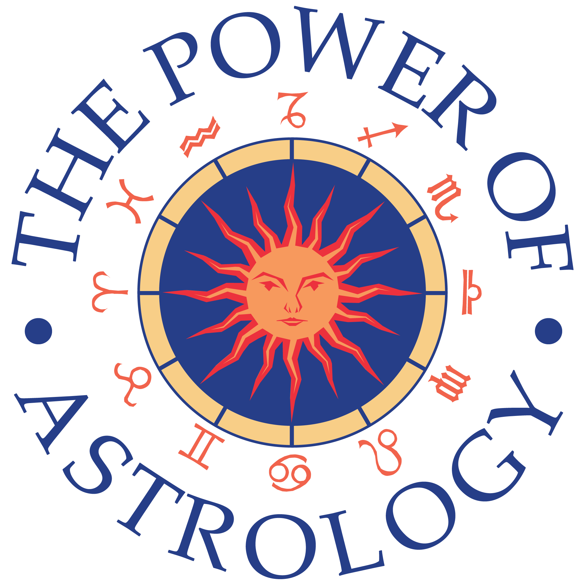

Astrology is the study of the movements and relative positions of celestial objects as a means for divining information about human affairs and terrestrial events.[1][2][3] Astrology has been dated to at least the 2nd millennium BCE, and has its roots in calendrical systems used to predict seasonal shifts and to interpret celestial cycles as signs of divine communications.[4] Many cultures have attached importance to astronomical events, and some – such as the Indians, Chinese, and Maya – developed elaborate systems for predicting terrestrial events from celestial observations. Western astrology, one of the oldest astrological systems still in use, can trace its roots to 19th–17th century BCE Mesopotamia, from which it spread to Ancient Greece, Rome, the Arab world and eventually Central and Western Europe. Contemporary Western astrology is often associated with systems of horoscopes that purport to explain aspects of a person's personality and predict significant events in their lives based on the positions of celestial objects; the majority of professional astrologers rely on such systems.[5]:83
Throughout most of its history astrology was considered a scholarly tradition and was common in academic circles, often in close relation with astronomy, alchemy, meteorology, and medicine.[6] It was present in political circles, and is mentioned in various works of literature, from Dante Alighieri and Geoffrey Chaucer to William Shakespeare, Lope de Vega and Calderón de la Barca.
During the 20th century and following the wide-scale adoption of the scientific method, astrology has been challenged successfully on both theoretical[7]:249;[8] and experimental[9][10] grounds, and has been shown to have no scientific validity[5] or explanatory power. Astrology thus lost its academic and theoretical standing, and common belief in it has largely declined.[11] While polling studies have demonstrated that approximately 25% of Americans, Canadians, and Britons say they continue to believe that star and planet positions affect their lives,[12] astrology is now recognized as pseudoscience.[13][14][15][16][17]
Contents
• 1 Etymology
• 2 History
o 2.1 Ancient world
? 2.1.1 Ancient objections
o 2.2 Hellenistic Egypt
o 2.3 Greece and Rome
o 2.4 Medieval world
? 2.4.1 Hindu
? 2.4.2 Islamic
? 2.4.3 Europe
History of astrology The Zodiac Man a diagram of a human body and astrological symbols with instructions explaining the importance of astrology from a medical perspective. From a 15th-century Welsh manuscript Many cultures have attached importance to astronomical events, and the Indians, Chinese, and Maya developed elaborate systems for predicting terrestrial events from celestial observations. In the West, astrology most often consists of a system of horoscopes purporting to explain aspects of a person's personality and predict future events in their life based on the positions of the sun, moon, and other celestial objects at the time of their birth. The majority of professional astrologers rely on such systems.[5]:83 Astrology has been dated to at least the 2nd millennium BCE, with roots in calendrical systems used to predict seasonal shifts and to interpret celestial cycles as signs of divine communications.[4] A form of astrology was practised in the first dynasty of Mesopotamia (1950–1651 BCE). Chinese astrology was elaborated in the Zhou dynasty (1046–256 BCE). Hellenistic astrology after 332 BCE mixed Babylonian astrology with Egyptian Decanic astrology in Alexandria, creating horoscopic astrology. Alexander the Great's conquest of Asia allowed astrology to spread to Ancient Greece and Rome. In Rome, astrology was associated with 'Chaldean wisdom'. After the conquest of Alexandria in the 7th century, astrology was taken up by Islamic scholars, and Hellenistic texts were translated into Arabic and Persian. In the 12th century, Arabic texts were imported to Europe and translated into Latin. Major astronomers including Tycho Brahe, Johannes Kepler and Galileo practised as court astrologers. Astrological references appear in literature in the works of poets such as Dante Alighieri and Geoffrey Chaucer, and of playwrights such as Christopher Marlowe and William Shakespeare. Throughout most of its history, astrology was considered a scholarly tradition. It was accepted in political and academic contexts, and was connected with other studies, such as astronomy, alchemy, meteorology, and medicine.[6] At the end of the 17th century, new scientific concepts in astronomy and physics (such as heliocentrism and Newtonian mechanics) called astrology into question. Astrology thus lost its academic and theoretical standing, and common belief in astrology has largely declined.[11] Ancient world[edit] See also: Babylonian astrology Astrology, in its broadest sense, is the search for meaning in the sky.[20]:2,3 Early evidence for humans making conscious attempts to measure, record, and predict seasonal changes by reference to astronomical cycles, appears as markings on bones and cave walls, which show that lunar cycles were being noted as early as 25,000 years ago.[21]:81ff This was a first step towards recording the Moon's influence upon tides and rivers, and towards organising a communal calendar.[21] Farmers addressed agricultural needs with increasing knowledge of the constellations that appear in the different seasons—and used the rising of particular star-groups to herald annual floods or seasonal activities.[22] By the 3rd millennium BCE, civilisations had sophisticated awareness of celestial cycles, and may have oriented temples in alignment with heliacal risings of the stars.[23] Scattered evidence suggests that the oldest known astrological references are copies of texts made in the ancient world. The Venus tablet of Ammisaduqa thought to be compiled in Babylon around 1700 BCE.[24] A scroll documenting an early use of electional astrology is doubtfully ascribed to the reign of the Sumerian ruler Gudea of Lagash (c. 2144 – 2124 BCE). This describes how the gods revealed to him in a dream the constellations that would be most favourable for the planned construction of a temple.[25] However, there is controversy about whether these were genuinely recorded at the time or merely ascribed to ancient rulers by posterity. The oldest undisputed evidence of the use of astrology as an integrated system of knowledge is therefore attributed to the records of the first dynasty of Mesopotamia (1950–1651 BCE). This astrology had some parallels with Hellenistic Greek (western) astrology, including the zodiac, a norming point near 9 degrees in Aries, the trine aspect, planetary exaltations, and the dodekatemoria (the twelve divisions of 30 degrees each).[26] The Babylonians viewed celestial events as possible signs rather than as causes of physical events.[26] The system of Chinese astrology was elaborated during the Zhou dynasty (1046–256 BCE) and flourished during the Han Dynasty (2nd century BCE to 2nd century CE), during which all the familiar elements of traditional Chinese culture – the Yin-Yang philosophy, theory of the five elements, Heaven and Earth, Confucian morality – were brought together to formalise the philosophical principles of Chinese medicine and divination, astrology and alchemy.[27]:3,4 Ancient objections[edit]
The Roman orator Cicero objected to astrology Cicero stated the twins objection (that with close birth times, personal outcomes can be very different), later developed by Saint Augustine.[28] He argued that since the other planets are much more distant from the earth than the moon, they could have only very tiny influence compared to the moon's.[29] He also argued that if astrology explains everything about a person's fate, then it wrongly ignores the visible effect of inherited ability and parenting, changes in health worked by medicine, or the effects of the weather on people.[30] Plotinus argued that since the fixed stars are much more distant than the planets, it is laughable to imagine the planets' effect on mankind should depend on their position with respect to the zodiac. He also argues that the interpretation of the moon's conjunction with a planet as good when the moon is full, but bad when the moon is waning, is clearly wrong, as from the moon's point of view, half of her surface is always in sunlight; and from the planet's point of view, waning should be better, as then the planet sees some light from the moon, but when the moon is full to us, it is dark, and therefore bad, on the side facing the planet.[31] Favorinus argued that it was absurd to imagine that stars and planets would affect human bodies in the same way as they affect the tides,[32] and equally absurd that small motions in the heavens cause large changes in people's fates. Sextus Empiricus argued that it was absurd to link human attributes with myths about the signs of the zodiac.[33] Carneades argued that belief in fate denies free will and morality; that people born at different times can all die in the same accident or battle; and that contrary to uniform influences from the stars, tribes and cultures are all different.[34] Hellenistic Egypt[edit] Main article: Hellenistic astrology
1484 copy of first page of Ptolemy's Tetrabiblos, translated into Latin by Plato of Tivoli In 525 BCE, Egypt was conquered by the Persians. The 1st century BCE Egyptian Dendera Zodiac shares two signs – the Balance and the Scorpion – with Mesopotamian astrology.[35] With the occupation by Alexander the Great in 332 BCE, Egypt became Hellenistic. The city of Alexandria was founded by Alexander after the conquest, becoming the place where Babylonian astrology was mixed with Egyptian Decanic astrology to create Horoscopic astrology. This contained the Babylonian zodiac with its system of planetary exaltations, the triplicities of the signs and the importance of eclipses. It used the Egyptian concept of dividing the zodiac into thirty-six decans of ten degrees each, with an emphasis on the rising decan, and the Greek system of planetary Gods, sign rulership and four elements.[36] 2nd century BCE texts predict positions of planets in zodiac signs at the time of the rising of certain decans, particularly Sothis.[37] The astrologer and astronomer Ptolemy lived in Alexandria. Ptolemy's work the Tetrabiblos formed the basis of Western astrology, and, "...enjoyed almost the authority of a Bible among the astrological writers of a thousand years or more."[38] Greece and Rome[edit] The conquest of Asia by Alexander the Great exposed the Greeks to ideas from Syria, Babylon, Persia and central Asia.[39] Around 280 BCE, Berossus, a priest of Bel from Babylon, moved to the Greek island of Kos, teaching astrology and Babylonian culture.[40] By the 1st century BCE, there were two varieties of astrology, one using horoscopes to describe the past, present and future; the other, theurgic, emphasising the soul's ascent to the stars.[41] Greek influence played a crucial role in the transmission of astrological theory to Rome.[42] The first definite reference to astrology in Rome comes from the orator Cato, who in 160 BCE warned farm overseers against consulting with Chaldeans,[43] who were described as Babylonian 'star-gazers'.[44] Among both Greeks and Romans, Babylonia (also known as Chaldea) became so identified with astrology that 'Chaldean wisdom' became synonymous with divination using planets and stars.[45] The 2nd-century Roman poet and satirist Juvenal complains about the pervasive influence of Chaldeans, saying, "Still more trusted are the Chaldaeans; every word uttered by the astrologer they will believe has come from Hammon's fountain."[46] One of the first astrologers to bring Hermetic astrology to Rome was Thrasyllus, astrologer to the emperor Tiberius,[42] the first emperor to have had a court astrologer,[47] though his predecessor Augustus had used astrology to help legitimise his Imperial rights.[48] Medieval world[edit] Hindu[edit] The main texts upon which classical Indian astrology is based are early medieval compilations, notably the B?hat Parasara Horasastra, and Saravali by Kalya?avarma. The Horashastra is a composite work of 71 chapters, of which the first part (chapters 1–51) dates to the 7th to early 8th centuries and the second part (chapters 52–71) to the later 8th century. The Saravali likewise dates to around 800 CE.[49] English translations of these texts were published by N.N. Krishna Rau and V.B. Choudhari in 1963 and 1961, respectively. Islamic[edit]
Astrology in medieval Islam Latin translation of Abu Ma?shar's De Magnis Coniunctionibus ('Of the great conjunctions'), Venice, 1515 Astrology was taken up by Islamic scholars[50] following the collapse of Alexandria to the Arabs in the 7th century, and the founding of the Abbasid empire in the 8th. The second Abbasid caliph, Al Mansur (754–775) founded the city of Baghdad to act as a centre of learning, and included in its design a library-translation centre known as Bayt al-Hikma 'House of Wisdom', which continued to receive development from his heirs and was to provide a major impetus for Arabic-Persian translations of Hellenistic astrological texts. The early translators included Mashallah, who helped to elect the time for the foundation of Baghdad,[51] and Sahl ibn Bishr, (a.k.a. Zael), whose texts were directly influential upon later European astrologers such as Guido Bonatti in the 13th century, and William Lilly in the 17th century.[52] Knowledge of Arabic texts started to become imported into Europe during the Latin translations of the 12th century. Europe[edit] Dante Alighieri meets the Emperor Justinian in the Sphere of Mercury, in Canto 5 of the Paradiso See also: Christian views on astrology The first astrological book published in Europe was the Liber Planetis et Mundi Climatibus ("Book of the Planets and Regions of the World"), which appeared between 1010 and 1027 AD, and may have been authored by Gerbert of Aurillac.[53] Ptolemy's second century AD Tetrabiblos was translated into Latin by Plato of Tivoli in 1138.[53] The Dominican theologian Thomas Aquinas followed Aristotle in proposing that the stars ruled the imperfect 'sublunary' body, while attempting to reconcile astrology with Christianity by stating that God ruled the soul.[54] The thirteenth century mathematician Campanus of Novara is said to have devised a system of astrological houses that divides the prime vertical into 'houses' of equal 30° arcs,[55] though the system was used earlier in the East.[56] The thirteenth century astronomer Guido Bonatti wrote a textbook, the Liber Astronomicus, a copy of which King Henry VII of England owned at the end of the fifteenth century.[55] In Paradiso, the final part of the Divine Comedy, the Italian poet Dante Alighieri referred "in countless details"[57] to the astrological planets, though he adapted traditional astrology to suit his Christian viewpoint, DOWNLOAD THE COMPLETE INFO